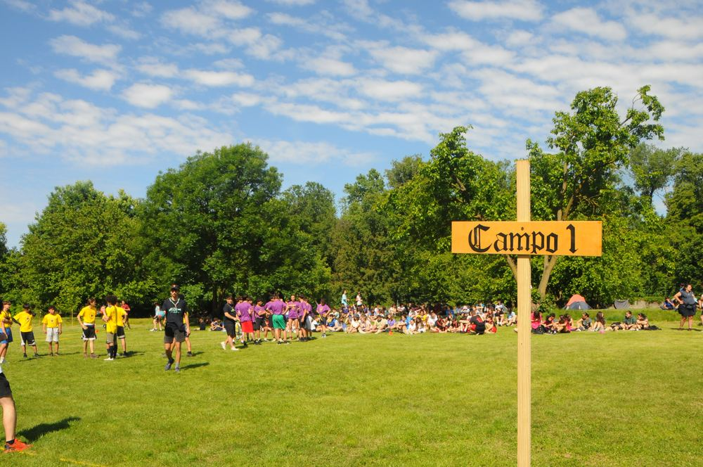
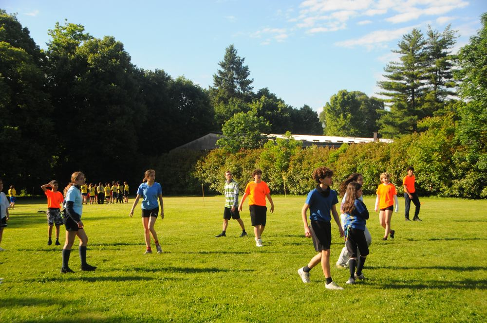
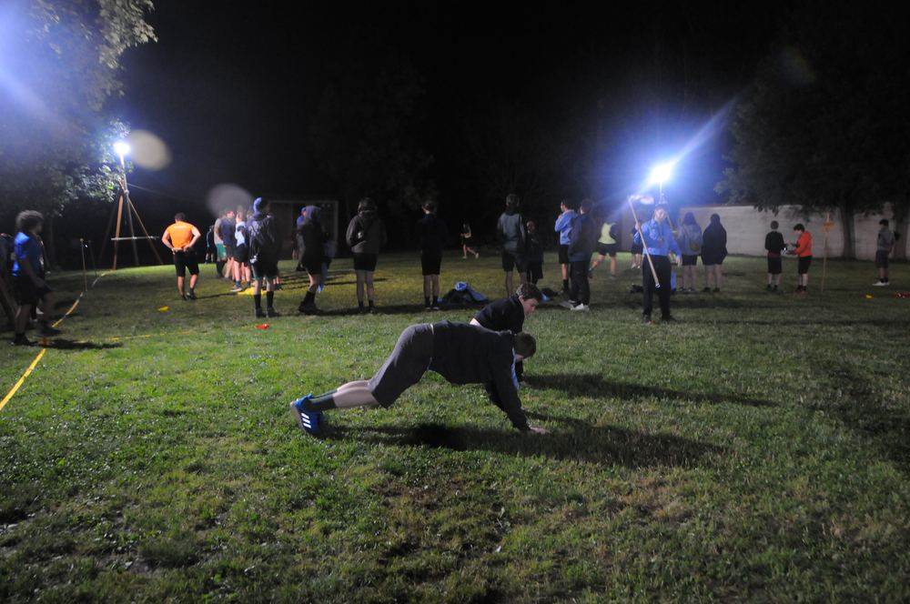
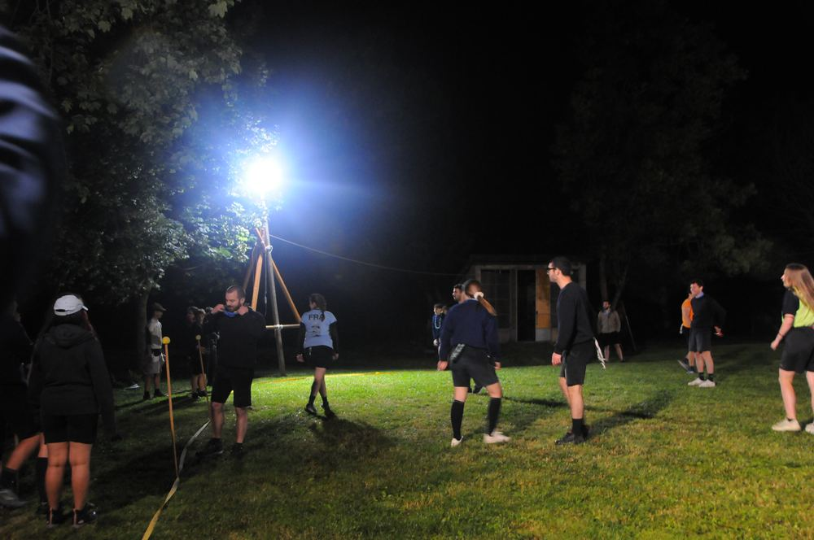
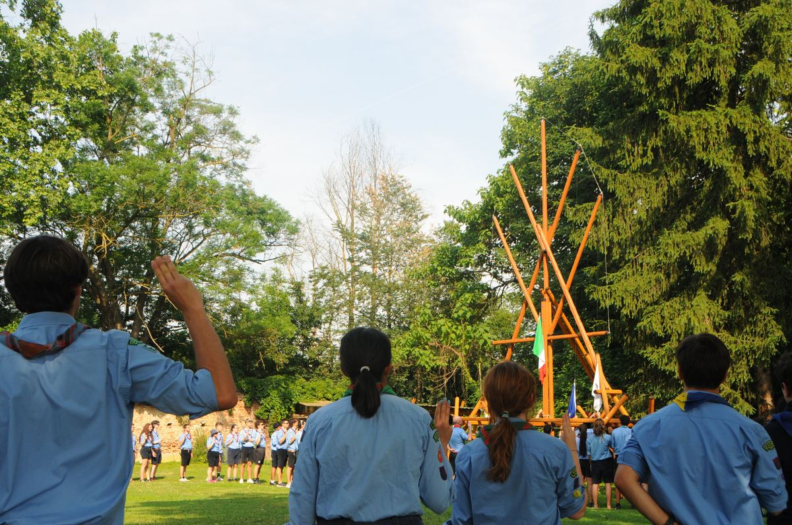
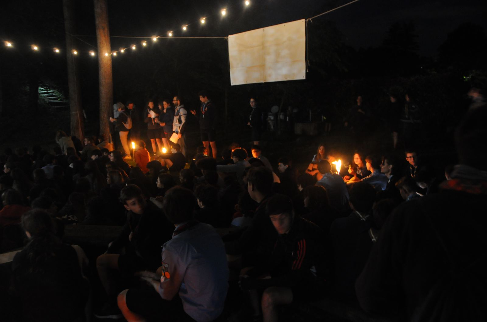

Dal 2009, al Parco di Monza
Un evento scout che non si ferma mai: 24 ore ininterrotte di pallascout, tra sole, notte e stelle, dove lo stile scout conta quanto il risultato in campo.
La 24oredelleGrazie nasce nel 2009 e da allora, ogni anno, circa 250 esploratori e guide si ritrovano per sfidarsi in un evento scout unico nel suo genere.
L'intero evento si svolge senza interruzioni tra il pomeriggio del sabato e quello della domenica: i partecipanti vivono la magia delle partite in notturna, mettendosi alla prova nell'autogestione e nello stile scout che accompagna l'intera manifestazione.
Accoglienza delle squadre, ultimi ritocchi al regolamento e fischio d'inizio dei primi incontri.
Le partite proseguono sotto le stelle: è il cuore dell'evento, dove si misura davvero lo spirito scout.
L'evento entra nel vivo con gironi e sfide decisive, tra stanchezza e adrenalina.
Finali e premiazione: la Coppa di Teodolinda viene alzata al cielo dalla squadra vincitrice.


Quando cala il buio le partite non si fermano: riflettori e torce illuminano i campi, e la stanchezza lascia spazio all'adrenalina e allo spirito di squadra.


La base, in via Montecassino 8 a Monza, è di proprietà della Fondazione Baden dal marzo 2022 e ospita la 24oredelleGrazie fin dalla sua prima edizione.
Immersa nel Parco di Monza, è raggiungibile a piedi in poco meno di un quarto d'ora da entrambe le stazioni ferroviarie della città, Monza e Monza Sobborghi.
Via Montecassino 8, Monza — apri in Google Maps ↗


La sera, tra fuoco e racconti, prima che il gioco riprenda sotto le stelle.
L'evento è aperto a due categorie scout, ciascuna con il proprio regolamento e la propria storia.
La categoria storica, quella che ha dato vita alla 24oredelleGrazie.
Una categoria dedicata, con format pensato per un'età e un ruolo diversi.